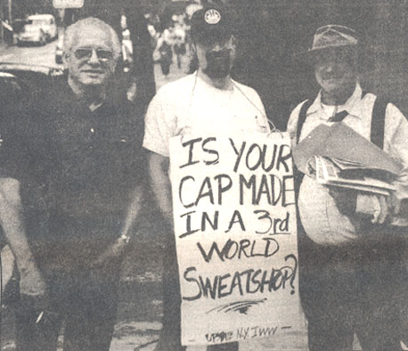

Submitted on Thu, 07/12/2007 - 10:01pm
Headlines:
- IWW UK fights centralized blood service
- US Supreme Court tightens noose on victims of job discrimination
- Cambodian textile workers feel crunch
- Ontario workers march as factories close
Featured Articles:
- Working without bosses in Argentina
- Training IWW organizers in the US Midwest
- Obituary: Remembering Fellow Worker Mark Dickson
Download a free PDF copy of this issue.
Submitted on Tue, 07/10/2007 - 6:02pm
July 11, 2007 marks one year since the Pirates Baseball Club hosted the All Star Game and promised the people of Pittsburgh that they would investigate working conditions in the factories sewing Pirates’ apparel. As the Pittsburgh General Membership Branch of the IWW reminds the Pirates at their July 8 game at PNC Park against the Chicago Cubs, Pittsburgh has high standards for workers’ rights. The City’s Sports and Exhibition Authority has recommended the investigatory protocols of the Workers Rights Consortium (WRC), disclosure of wages and factory locations, truly independent investigations, and a commitment to the factories where investigations take place.
Submitted on Tue, 07/03/2007 - 9:34pm
The Industrial Workers of the World recently marched on HWH Trading Corp to demand fair pay and better working conditions for the company’s 15 warehouse employees. The July 1st march was the first public action of an ambitious organizing drive that the NYC IWW is undertaking this summer. Dubbed “9 in 90,” the IWW is hoping to organize nine new shops in the next 90 days. The IWW has already made waves in the NYC foodstuffs industry by organizing five of the most exploitative warehouses in the city.
The current organizing drive kicked off in mid-June, and organizers have already had talks with workers from four new shops. HWH, a produce distributor in Queens, is the first of the “9 in 90” whose workers have gone public with their IWW membership. At HWH, workers are not only expected to work extremely long hours, but routinely travel up and down the Eastern seaboard. Workers come into the warehouse Sunday night, spend the night loading up their trucks, and head out for long trips Monday morning.
Submitted on Tue, 06/26/2007 - 12:54pm
 Sisters and Brothers:
Sisters and Brothers:
Simone Gordon and the IWW Starbucks Workers Union [StarbucksUnion.org] need your solidarity now. Ms. Gordon is homeless and on welfare after Starbucks demoted her from shift supervisor to barista on New Year’s Day and cut her schedule to a stunning five hours per week. Simone’s store manager, Graham Higgins, falsely accused Ms. Gordon, who is African-American, of being racist against white people and stated that she wasn’t fit to be a leader in the store. The allegation that Ms. Gordon is racist is so patently absurd that we won’t even dignify it with a response. Suffice it to say, Simone Gordon, who has a white grandparent, opposes all forms of discrimination.
Submitted on Tue, 06/26/2007 - 12:50pm
 The IWW is continuing in our support for the Crichton workers' and students' fight to save their jobs and courses. We're stepping up our fight by picketing or leafleting every major event Glasgow University is hosting on its main campus, in an effort to raise the visibility of our campaign, and we are pursuing other initiatives to force a climbdown on the decision to close the campus. However to make our presence really felt we urge you and your friends to take a few minutes out of your day to demonstrate the strength of feeling we have on this issue. Please help us by contacting the following people. It's vital at this stage that public pressure, from civil society groups and so on, is actually visibily increasing on this issue.
The IWW is continuing in our support for the Crichton workers' and students' fight to save their jobs and courses. We're stepping up our fight by picketing or leafleting every major event Glasgow University is hosting on its main campus, in an effort to raise the visibility of our campaign, and we are pursuing other initiatives to force a climbdown on the decision to close the campus. However to make our presence really felt we urge you and your friends to take a few minutes out of your day to demonstrate the strength of feeling we have on this issue. Please help us by contacting the following people. It's vital at this stage that public pressure, from civil society groups and so on, is actually visibily increasing on this issue.
Contact the Principal, Sir Muir Russell and complain at the decision.
Email: principal@gla.ac.uk; Tel: 0141 330 5995
Contact the Scottish Funding Council and urge them to help Glasgow University find a resolution to this problem
Email: rmcclure@sfc.ac.uk
Contact Fiona Hyslop, Minister for Education and Lifelong Learning, and urge her to act quickly to help resolve the situation.
Email: Fiona.Hyslop.msp@scottish.parliament.uk
POINTS TO NOTE IN YOUR COMMUNICATIONS:-
Glasgow University made a profit last year of £2 million.
The claims of the University that the Crichton Campus loses £800,000 a year have been dismissed as laughable by MSPs from across all the political parties.
The University hopes to spend the money it will gain from closing its part of the Crichton campus (liberal arts) on recruiting just 3 researchers to boost the University's image. Money which should have been directed to the Crichton campus has went to fund a new business school at the main Glasgow campus.
In a previous job, as Scotland's most powerful civil servant, Sir Muir Russell presided over the building of the Scottish parliament, which was supposed to cost £50 million, but in fact cost £400 million more
than this. This man is clearly not very shrewd with money, and this casts doubt on his claims that the Crichton is not viable, and indeed on what his plans are to do with this cash instead.
Dumfries and Galloway has no other Higher Education facility, and suffers economically from a gap in graduates, and graduate jobs, as well as a skewn age demographic as young people leave Dumfries and Galloway for the central belt to find education and work.